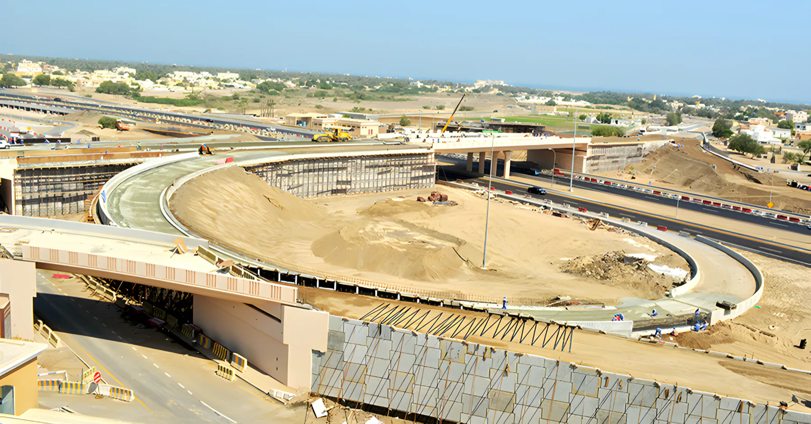
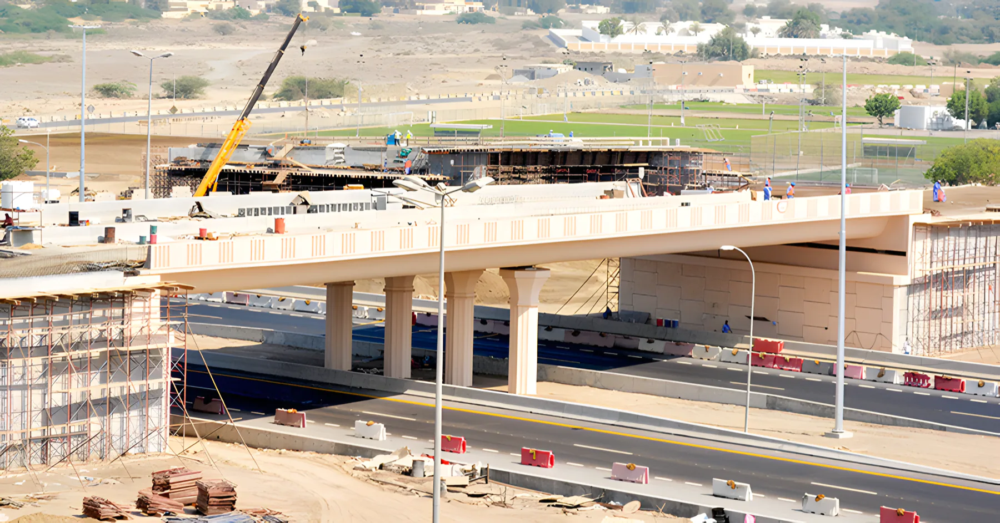
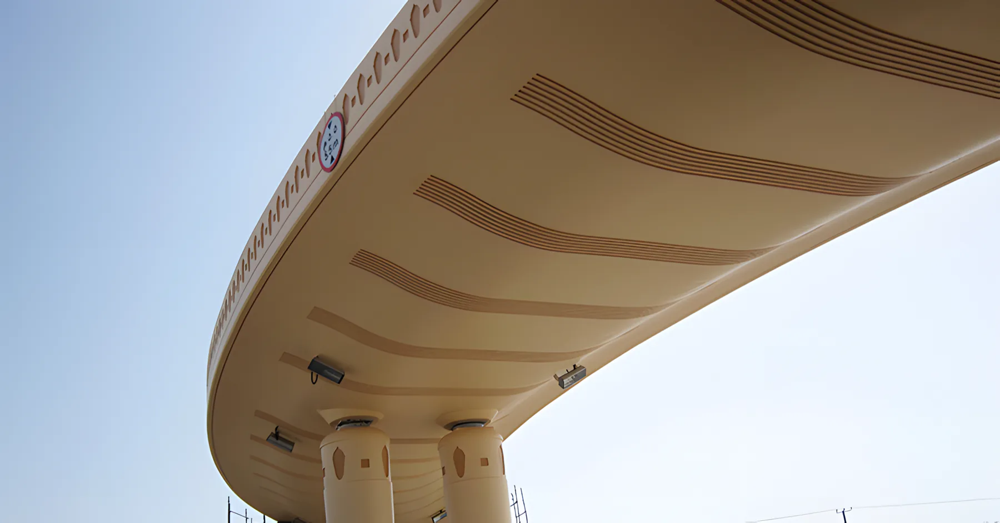
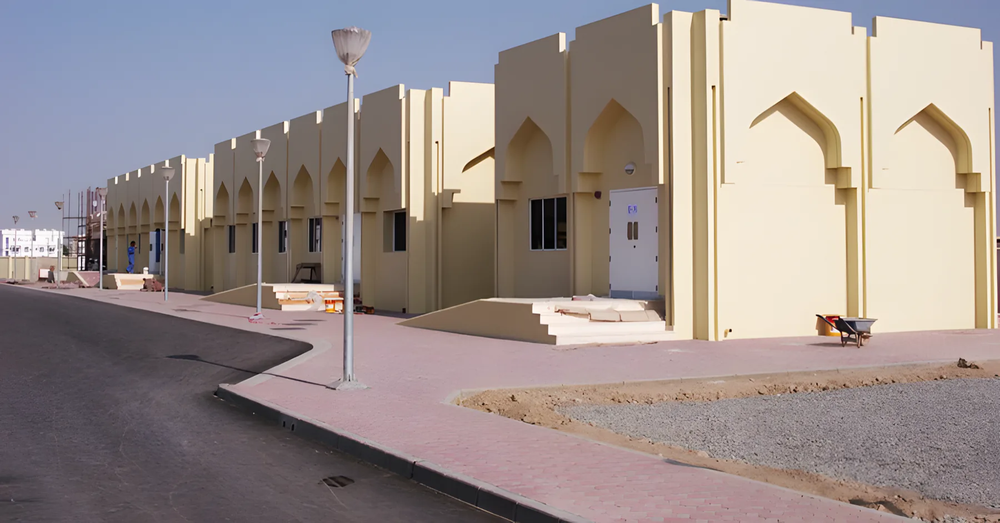
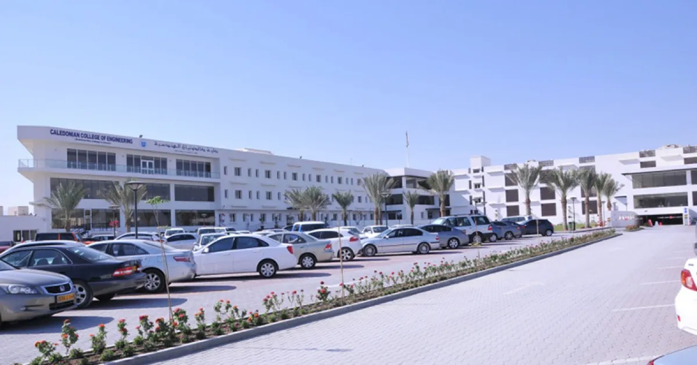
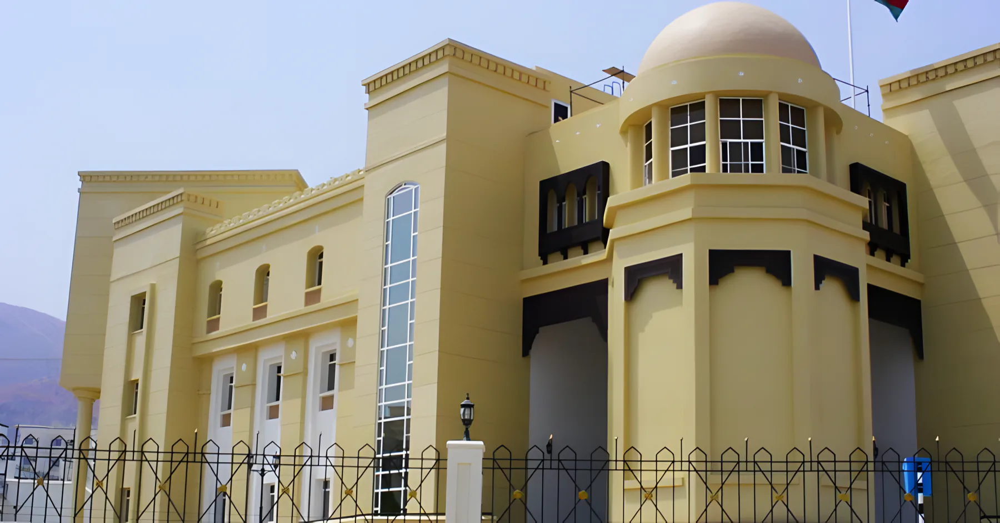
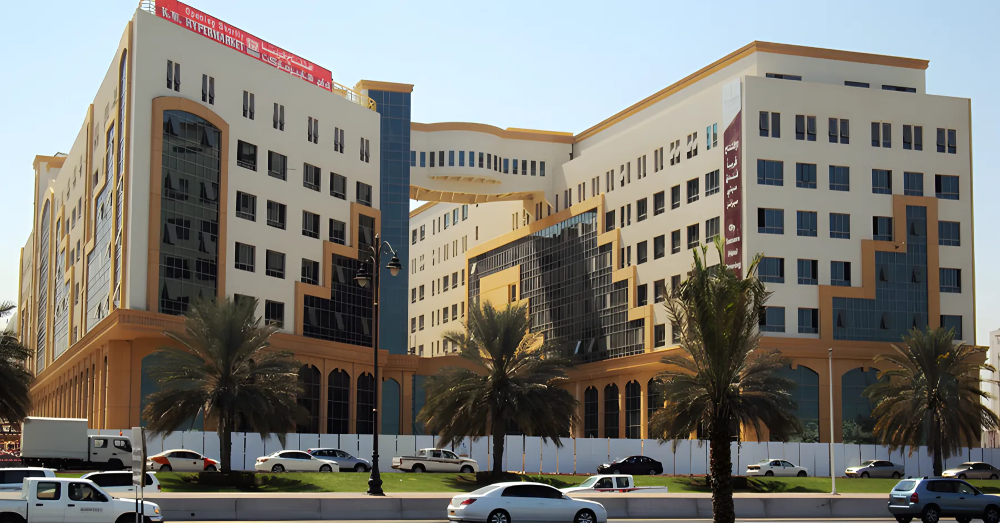
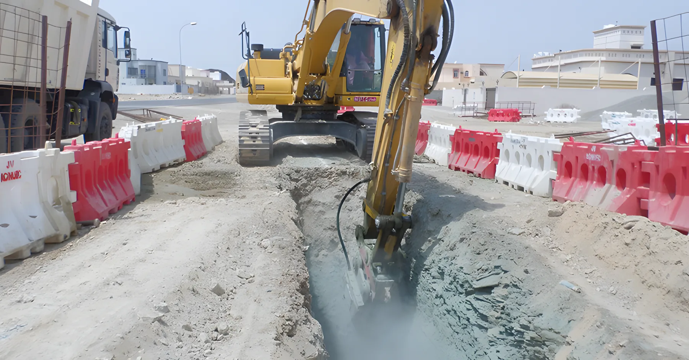
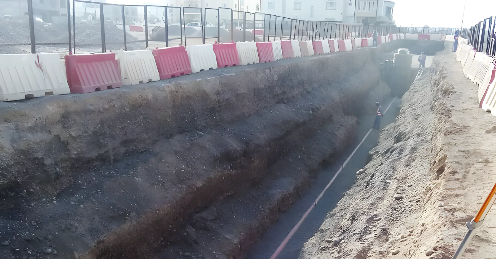

Projects
25 projects from our register, from the Wadi Al Sahtan road to 458 km of sewer in Mobella. Values are contract values in Omani rials, as awarded.
Clients include the Ministry of Transport & Communications, Haya Water, the Public Authority for Electricity & Water, OETC and the Ministry of Interior.

| Photo | No. | Project | Location | Client | Contract value |
|---|---|---|---|---|---|
 | 01 | Upgrading of Sohar RoundaboutInterchange in place of the old roundabout; about 4 km of Batinah Highway widened from four to six lanes, with pedestrian underpasses and overpasses, taxi stands and bus bays. | Sohar | Ministry of Transport & Communications | OMR 20,948,376 |
 | 02 | Asphalt Road to Wadi Al Sahtan31 km of road with links to Umq, Al Farrah, Fasah and Old Tabaqah villages: 94 culverts, a 7.5 km retaining wall and 2 bridges. DOSSIER award, Best Infrastructure Project 2018. | Rustaq | Ministry of Transport & Communications | OMR 31,990,898 |
 | 03 | Dualization of Al Rustaq Escarpment Road12 km dual carriageway with 30 km of asphalt service road, two signalised junctions, pedestrian and vehicle underpasses, street lights, shotcreting and a gateway building. | Rustaq | Ministry of Transport & Communications | OMR 27,706,329 |
 | 04 | Yanqul – Fida – Dank RoadConcrete-paved road from Yanqul through Fida to Dank. | Yanqul | Ministry of Transport & Communications | OMR 19,920,331 |
 | 05 | Upgrading Salan RoundaboutInterchange ramps, a box-girder flyover, the main road rebuilt through the junction, two pedestrian underpasses and four overpasses. | Sohar | Ministry of Transport & Communications | OMR 11,814,108 |
 | 06 | Grade Separated Junctions, Batinah HighwayDesign and construction of four overpasses and one underpass along the Batinah Highway. | Batinah Highway | Ministry of Transport & Communications | OMR 8,699,007 |
 | 07 | A'Sharqiyah UniversityAdministration block, colleges, library, student centre, engineering labs, central chiller plant and STP yards: 135,000 m² built-up. | Ibra | A'Sharqiyah University | OMR 23,000,000 |
 | 08 | Headquarters building, Ministry of InteriorGround + 4 floors, 12,955 m² of offices. | Al Khuwair, Muscat | Ministry of Interior | OMR 3,692,694 |
 | 09 | Extended Health Centre, SeebMain block, LV room, medical and general stores and external works. | Seeb, Muscat | Ministry of Health | OMR 5,029,972 |
 | 10 | Caledonian College of Engineering CampusGirls' hostel and classrooms with all services, storm water and drainage. | Airport Heights, Muscat | Caledonian College of Engineering | OMR 4,191,997 |
 | 11 | Central Control BuildingThree-storey office building, landscaping and covered parking, about 8,000 m² built-up. | Bausher, Muscat | Public Authority for Electricity & Water | OMR 3,429,111 |
 | 12 | Office Building at BausherOffice building with 5,300 m² floor area. | Bausher, Muscat | Private client | OMR 1,882,140 |
 | 13 | Language Centre BuildingTechnical college building in Al Khuwair with external works. | Al Khuwair, Muscat | Ministry of Manpower | OMR 1,504,355 |
 | 14 | Commercial Residential ComplexCommercial building with 3,800 m² floor area. | Muscat | Private client | OMR 700,000 |
 | 15 | Water Supply System for HaymaWater from the Duqm reservoir to Haima: 276 km of pipe incl. 68 km of network at Haima and Al Ajaiz, three ground reservoirs, two elevated tanks, four pumping stations. | Al Wusta | Public Authority for Electricity & Water | OMR 24,487,145 |
 | 16 | Water Supply to Ras Al Hadd Village37 km of transmission pipeline from the Salah water supply system with 1,000 m³ and 3,000 m³ ground reservoirs, for Ras Al Hadd, Ras Al Jinz and the Diar tourist project. | Ras Al Hadd, Sur | Public Authority for Electricity & Water | OMR 2,813,060 |
 | 17 | Infra Civil & MEP Works, Diar Ras Al HaddWater and fire-fighting reservoirs and pump rooms, roads, storm and waste water networks, 11 kV and LV cabling, street lights and a substation. | Ras Al Hadd, Sur | Qatari Diar Ras Al-Hadd Development Co. | OMR 3,093,956 |
 | 18 | Mobella Wastewater Project458 km of gravity sewer (231 km main line, 227 km riders and house connections) with 10,171 house connection chambers. | Mobella, Muscat | Haya Water | OMR 58,531,567 |
 | 19 | Al Amerat Gravity Sewer Network269 km of gravity lines and 4,139 house connection chambers. | Al Amerat, Muscat | Haya Water | OMR 22,154,624 |
 | 20 | A'Seeb Wastewater Project235 km of gravity lines and 8,000 house connection chambers. | Seeb, Muscat | Haya Water | OMR 24,898,932 |
 | 21 | A'Seeb Wastewater Project, Package 01135 km of gravity lines and 3,650 house connection chambers. | Mobella, Muscat | Haya Water | OMR 17,626,483 |
 | 22 | Sewerage Network and STP, Barka87 km gravity mains, 15 km pressure line, 120 km of house connections, three pumping stations and a 6,000 m³/day treatment plant with SCADA. | Barka | Ministry of Regional Municipalities & Water Resources | OMR 11,900,000 |
 | 23 | 132/33 kV Yanqul Grid Station & Ibri Regional BuildingDesign and construction of the 132 kV GIS grid station at Yanqul with 2×125 MVA transformers, and the Ibri regional office building. | Yanqul & Ibri | OETC | — |
 | 24 | Substation in Duqm | Duqm | — | — |
 | 25 | Substation in Salalah | Salalah | — | — |

Roads & Bridges
Roads through wadis and mountains.
Hills, wadis and steep mountains: alignments where getting plant and material to the work is half the job.
Talk to us
Head office and base workshop, Muscat
P.O. Box 2053, Postal Code 111, Central Post Office, Sultanate of Oman
Tenders, general enquiries, vendor registration and careers: call the office or email us.
- Telephone
- +968 2450 2581 / 82 / 83
- Fax
- +968 2450 2532